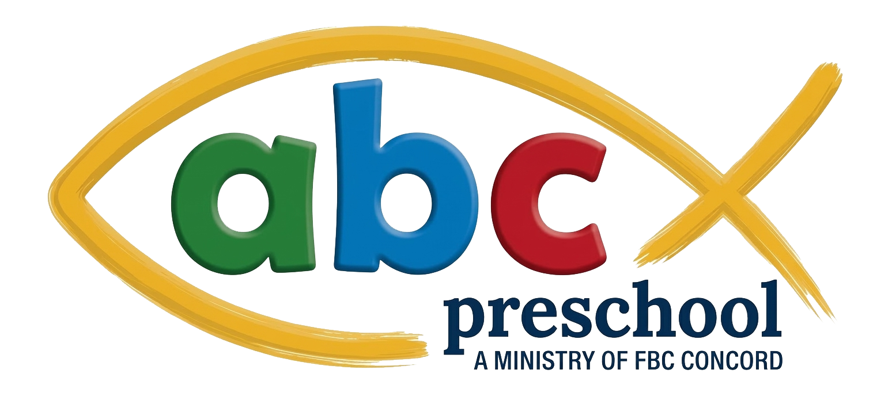

A Christ-centered half-day preschool in Concord, NC.
Serving 1-year-olds through Transitional Kindergarten · Monday–Friday, 8:45 am – 12:30 pm
Or call 704-786-9167 · families of any background welcome to apply
- ✓ Half-Day Schedule
- ✓ Ages 1 – TK
- ✓ ABeka Curriculum
- ✓ A Ministry of FBC Concord
ABC Preschool is a ministry of First Baptist Church of Concord — a safe, loving, Christian environment where young children grow spiritually, intellectually, and socially.
We partner with families to nurture the whole child in spirit, mind, and friendship — built on Scripture and grounded in academic excellence.
-
8:45 amArrival & Welcome
-
9:15 amBible & Circle Time
-
10:00 amLearning Centers
-
11:00 amOutdoor Play & Snack
We are unapologetically Christian.
Children at ABC begin each day with a Bible story at circle time, pray together at meals and chapel, and learn through songs, scripture, and play. Christ is the center of who we are — not a layer added on. Families of any background are welcome to apply, and we honestly share what your child will hear and learn so you can choose what's right for your family.
Honest answers to the questions families ask most.
Read FAQ →Chapel, centers, music, snack, outdoor play.
See a Day →Songs, stories, letters — what ABeka looks like at preschool age.
Curriculum →Holidays, breaks, and weather closing notes.
Calendar →Half-day rates, registration, and how to enroll.
View & Apply →Years of children's ministry, family-first approach.
Read Her Story →Half-day Christian education for less than half the cost of full-day daycare.
No hidden fees. Visit the Tuition page for what's included.
Tuition & Apply →A lifelong resident of Concord and lifetime member of FBC Concord, Korighan brings years of children's ministry experience to every classroom — from teaching AWANA in high school to leading FBC Concord's Children's Ministry. She co-directs ABC Preschool alongside Benita Long with a Christ-centered, family-first approach.
Read Korighan's Story →Come see what a day at ABC feels like.
Schedule a tour, start an application, or call Korighan with any questions. Applications are open year-round.